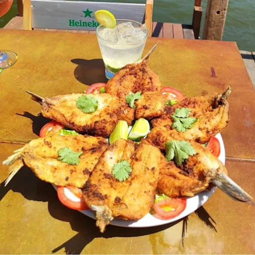
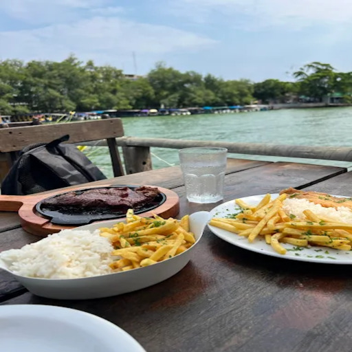
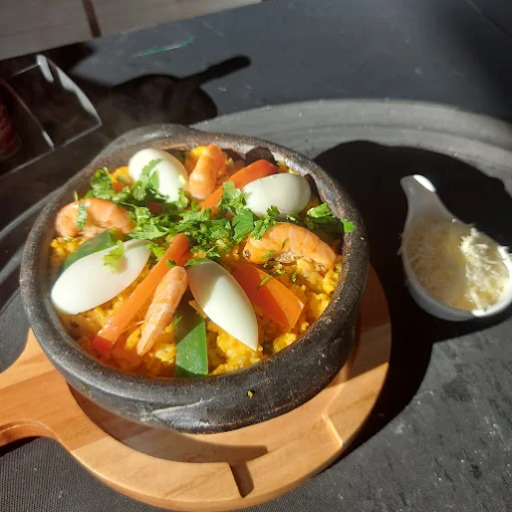
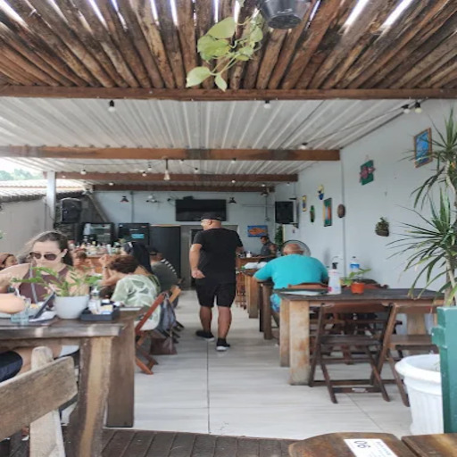
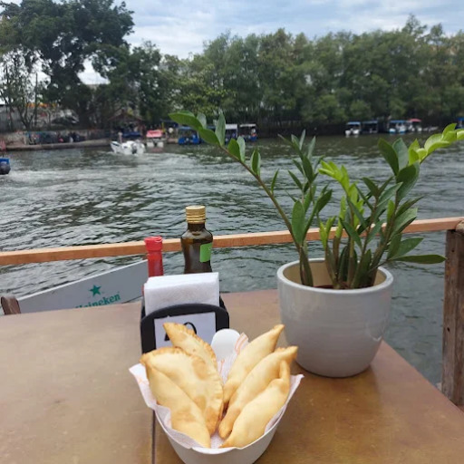
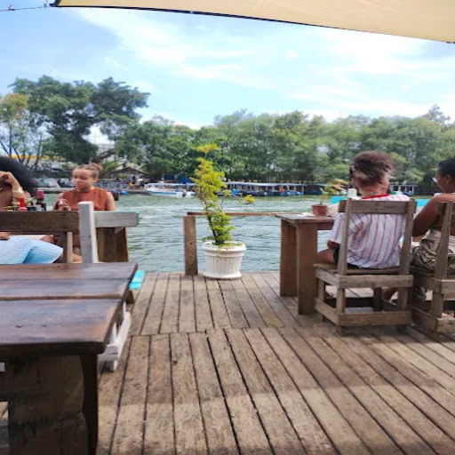
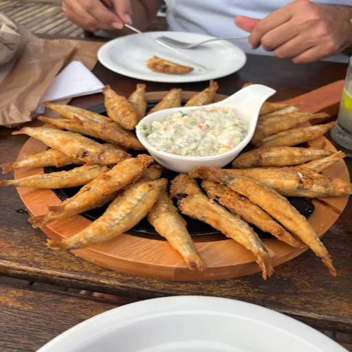
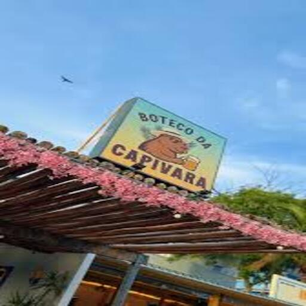

🍤 Peixe Fresco & Arte
Bar Capivara
Uma experiência gastronômica autêntica, onde o cardápio é ditado pelo mar e pela criatividade do chef.

Dica do Capi:








Essência da Lagoa
O Bar Capivara é o destino final para os verdadeiros amantes da gastronomia. Sem luxo ostensivo, mas com um sabor insuperável, o restaurante foca na qualidade extrema da matéria-prima, vinda diretamente dos pescadores locais.
Destaques
- ✓ Frutos do Mar do Dia
- ✓ Pratos Autorais
- ✓ Cervejas Artesanais
- ✓ Localização "Riz" e Charmosa
Fica a Dica
Chegue cedo! Como os produtos são frescos, as especialidades costumam acabar rápido.
Reserva
Altamente recomendado consultar disponibilidade.